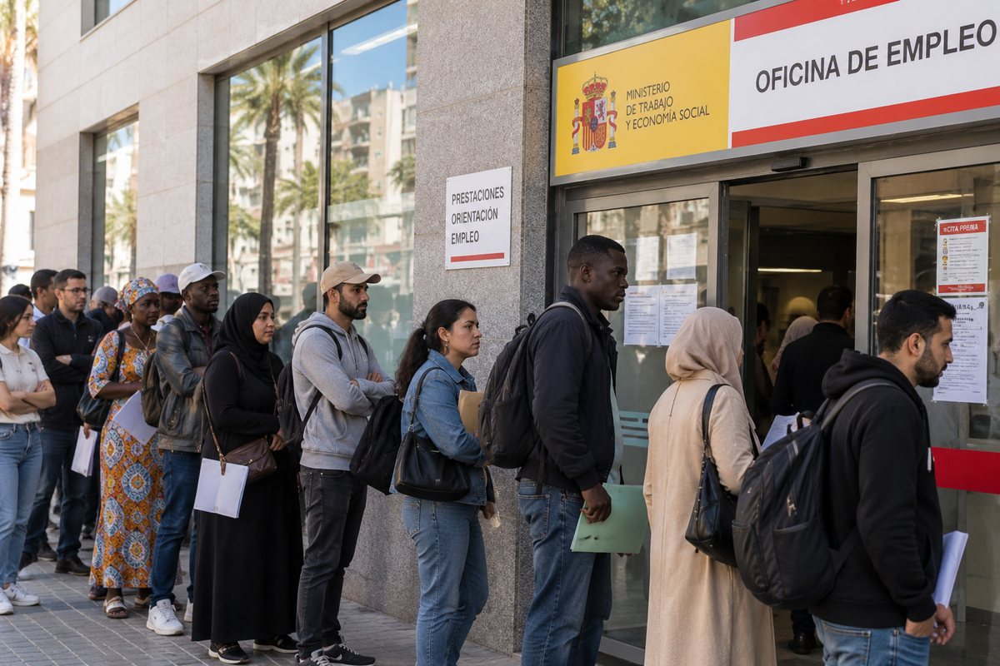

لماذا يُقبَل بعض المهاجرين، ويُتسامَح مع آخرين، ويُرفَض غيرهم؟
سورايا محمدي · منسقة مجال التشغيل في Ubuntu Canarias · ١٥ دقيقة قراءة · نُشر في ١٨ أكتوبر ٢٠٢٦

الهجرة لا تتحدث فقط عمّن يصلون؛ بل تكشف أيضاً كيف نحن، نحن الذين نستقبل. نظرة نفسية وإنسانية واجتماعية إلى أحكامنا المسبقة.
هناك سؤال يستحق أن يُطرح دون خوف من الإزعاج، ودون الدخول في نقاشات سياسية، ودون تحويل الموضوع إلى دفاع أعمى عن الهجرة أو رفض عام لها: لماذا يبدو أن بعض الأجانب يثيرون الثقة بشكل شبه تلقائي، بينما يضطر آخرون إلى إثبات أنهم جديرون بالثقة باستمرار؟
يعيش في إسبانيا أشخاص قادمون من أمريكا اللاتينية والمغرب وبلدان أفريقية أخرى وأوروبا وآسيا ومناطق كثيرة غيرها. لكل منهم قصة مختلفة، وأسباب مختلفة للهجرة، وظروف شخصية خاصة، وطريقة خاصة في فهم الحياة. ومع ذلك، لا يبدو أنهم جميعاً يحتلون المكانة نفسها في مخيلتنا الجماعية. هناك أشخاص نشعر بقربهم قبل أن نعرفهم، وآخرون ننظر إليهم بشيء من الحذر، حتى عندما لم يفعلوا أي شيء يبرر هذه الريبة.
لماذا يحدث هذا؟ لماذا يمكن للغة والمظهر الجسدي والدين واللباس وبعض العادات أن تؤثر إلى هذا الحد في الانطباع الأول الذي نكوّنه عن شخص ما؟ ولماذا، عندما يرتكب شخص من فئة موصومة اجتماعياً جريمة، يمكن أن يصبح أصله محور الحديث، بينما يُنظر إلى الفعل نفسه في حالات أخرى على أنه سلوك فردي؟
لا تُحل هذه الأسئلة بالقول إن بعض الناس طيبون وآخرين أشرار، ولا بالادعاء أن كل رفض عنصرية أو أن أي قلق بشأن العيش المشترك غير مبرر. لفهم ما يحدث، علينا أن نتجاوز الإجابات السريعة وأن ننظر إلى الآليات النفسية والثقافية والعاطفية التي تتدخل في طريقة تعاملنا مع من نعتبرهم مختلفين.
الهجرة مرآة أيضاً. تسمح لنا برؤية مخاوفنا، وولاءاتنا، وحاجتنا إلى الأمان، وأحكامنا المسبقة المكتسبة، وقدرتنا —أو صعوبتنا— على الاعتراف بإنسانية شخص لا ينتمي إلى جماعتنا.
1. الألفة الثقافية: لماذا نشعر بقرب أكبر من بعض الناس دون غيرهم
عندما يصل شخص من أمريكا اللاتينية إلى إسبانيا، قد يجد عناصر تسهّل التقارب الأول: لغة مشتركة، وتعابير مألوفة، ومراجع ثقافية مشتركة، وبعض التقاليد المتشابهة، وفي حالات كثيرة روابط تاريخية وعائلية بين ضفتي الأطلسي.
هذا لا يعني أن كل الأشخاص من أمريكا اللاتينية متشابهون، أو أنهم يشاركوننا عاداتنا بالضرورة، أو أن الاندماج سهل دائماً. فأمريكا اللاتينية متنوعة بشكل استثنائي. لكن هناك نقاط اتصال يمكن أن تقلّص المسافة الأولى بين من يصل ومن يستقبل.
مع شخص مغربي، خاصة عندما يأتي من بيئة ثقافية ودينية مختلفة كثيراً عن بيئة من ينظر إليه، قد تكون هذه الألفة أقل. قد توجد اختلافات لغوية أو دينية أو عائلية أو اجتماعية تحتاج إلى وقت واستعداد أكبر للتفاهم. فالإسلام مثلاً قد يكون مجهولاً لمن لم يعش قط عن قرب مع شخص مسلم. وما لا نعرفه جيداً قد نفسّره بريبة، خاصة عندما تهيمن على المعلومات التي نتلقاها النزاعات والصور النمطية والأخبار السلبية.
هنا يظهر تمييز مهم: الشعور بألفة أكبر تجاه شخص ما ليس بالضرورة حكماً مسبقاً؛ أما اعتبار أن شخصاً ما أقل قيمة أو أكثر خطراً أو يستحق فرصاً أقل لأنه مختلف، فقد يتحول إلى تمييز.
الألفة العفوية جزء من العلاقات الإنسانية. نقترب بسهولة أكبر مما هو مألوف. تبدأ المشكلة عندما نحوّل هذا التفضيل الأولي إلى معيار لنقرر من يستحق ثقتنا، ومن يبدو مقبولاً كجار، ومن سنوظّف، ولمن سنؤجّر مسكناً، أو ممن سنرتاب عندما نصادفه في الشارع.
في تلك اللحظة، تتوقف الألفة عن كونها مجرد راحة عاطفية وتبدأ في العمل كحدود غير مرئية.
قد نقبل بشكل طبيعي أن يحتفظ شخص ما بلكنته اللاتينية وموسيقاه واحتفالاته وبعض عادات بلده، بينما ننظر بريبة أكبر إلى حجاب امرأة مسلمة، أو إلى لحية مرتبطة بهوية دينية معينة، أو إلى مجموعة من الرجال المغاربة يتحدثون في مقهى. لا يحدث هذا دائماً بطبيعة الحال، لكن عندما يحدث، من المفيد أن نسأل أنفسنا: ما الذي نفسّره حقاً؟ سلوكاً محدداً، أم مجموعة من المعاني ربطناها مسبقاً بهذا المظهر؟
قد يشعر الإنسان بعدم الارتياح أمام ما لا يعرفه. هذا الشعور إنساني. ما علينا مراجعته هو الاستنتاج الذي نستخلصه منه.
عدم معرفة ثقافة ما لا يجعلنا متعصبين. لكن استخدام جهلنا دليلاً على أن هذه الثقافة خطيرة يمنعنا من التعلم، وقد يقودنا إلى معاملة من يمثلونها بظلم.
2. الدماغ يبحث عن الأمان، لكنه لا يميّز دائماً بين الخطر الحقيقي والخطر المتخيَّل
نعرف من علم النفس الاجتماعي أننا نميل إلى تصنيف المعلومات التي نتلقاها بسرعة. يستخدم دماغنا التجارب السابقة والفئات المكتسبة وإشارات المحيط ليتوجّه في المواقف المعقدة. يمكن أن تساعدنا هذه العملية على التفاعل مع أخطار حقيقية، لكنها قد تؤدي أيضاً إلى أخطاء في الحكم.
عندما نلتقي بشخص لا نعرفه، لا تتوفر لدينا دائماً معلومات كافية لنعرف كيف هو. فقد نعتمد على مؤشرات سطحية: مظهره، ولغته، وطريقة لباسه، ولكنته، أو الجماعة التي نظن أنه ينتمي إليها.
المشكلة أن الانطباع السريع لا يساوي معرفة حقيقية.
إذا سمع شخص لسنوات أن بعض المهاجرين مرتبطون بالجريمة أو التطرف أو عدم الاندماج، فقد يبدأ في تفسير وجودهم كإشارة خطر. لا يحتاج إلى أن يكون قد عاش تجربة سلبية بنفسه. قد يكفي تكرار هذا الربط لكي يبدو له أمراً بديهياً.
وجدت الأبحاث حول الشعور بالتهديد بين الجماعات الاجتماعية علاقة بين الإحساس بالتهديد والمواقف السلبية تجاه الجماعات التي تُعتبر خارجية. وقد درس تحليل نُشر في مجلة Personality and Social Psychology Review، جمع 95 عيّنة، كيف ترتبط أنواع مختلفة من التهديد المتصوَّر —الواقعي والرمزي والمرتبط بالقلق أو الصور النمطية— بمواقف سلبية تجاه جماعات أخرى.
هذا لا يثبت أن كل قلق متخيَّل، ولا أن الأشخاص الذين يشعرون بالخوف يتصرفون بالضرورة بسوء نية. إنه يثبت شيئاً أدق: الشعور بالتهديد يمكن أن يؤثر في طريقة حكمنا على الآخرين، وهذا الشعور لا يتطابق دائماً مع تقييم فردي لسلوكهم.
الأمان حاجة مشروعة. كلنا نريد أن نعيش بهدوء، وأن نمشي في حيّنا، وأن نحمي أطفالنا، وأن نثق بمن حولنا. لا عيب في ذلك. يظهر الخطأ عندما نتوقف عن تقييم المواقف والسلوكيات المحددة ونبدأ في استخدام هوية الشخص بديلاً عن الأدلة.
السلوك التخويفي يستحق الانتباه، أياً كان مصدره. التهديد يجب أن يؤخذ على محمل الجد. والجريمة يجب أن يُحقَّق فيها. لكن مجرد كون الشخص مغربياً أو مسلماً أو من أمريكا اللاتينية أو أفريقياً لا يخبرنا وحده إن كان سيتصرف باحترام أو بعنف.
عندما نخلط بين الهوية والخطر، نتوقف عن رؤية الشخص ونبدأ في التفاعل مع صورة ذهنية.
المرجع: Riek وMania وGaertner، Intergroup Threat and Outgroup Attitudes: A Meta-Analytic Review (2006). الاطلاع على الدراسة في PubMed.
3. الكيل بمكيالين: عندما يصبح خطأ شخص واحد ذنب الكثيرين
من أكثر الظواهر حساسية في النقاش الاجتماعي حول الهجرة التعميم الجماعي.
لنتخيل أن رجلاً ارتكب اعتداءً. إذا كان ينتمي إلى جماعة نعتبرها قريبة منا، فقد يكون رد فعلنا الأول أن نسأل ما الذي دفعه إلى التصرف هكذا، وما الظروف المحيطة، وما مسؤوليته الفردية. لن نبرر سلوكه بالضرورة، لكننا سنحلله كسلوك شخص.
لنتخيل الآن أن الفاعل ينتمي إلى جماعة توجد حولها أحكام مسبقة. في هذه الحالة قد يتغير الحديث بسرعة: لم يعد الكلام عن المعتدي وحده، بل عن «المغاربة» أو «المسلمين» أو «المهاجرين». يتحول الفعل الفردي إلى دليل مزعوم على طبيعة جماعة بأكملها.
هنا تحدث قفزة منطقية من المهم الاعتراف بها: انتماء شخص إلى جماعة لا يعني أن هذه الجماعة مسؤولة عما يفعله هذا الشخص.
الجنسية ليست شخصية. والدين ليس تشخيصاً أخلاقياً. والثقافة لا تحوّل تلقائياً كل أفرادها إلى ممثلين لأكثر جوانبها إشكالية.
هذا لا يمنع دراسة أنماط الجريمة، أو تحليل بيانات موثوقة، أو مناقشة مشاكل محددة في العيش المشترك. بل يعني أن هذه القضايا يجب أن تُدرس بالأدلة والسياق ومعايير قابلة للمقارنة، لا بحكايات منتقاة لتأكيد رأي مسبق.
إذا أظهرت البيانات مشكلة محددة، يجب أن نتمكن من الحديث عنها. وإذا كانت ممارسة ما تنتهك حقوق شخص، يجب أن نتمكن من مساءلتها. وإذا ارتكب أحد جريمة، فعليه أن يتحمل مسؤولية أفعاله. لكن لا شيء من ذلك يسمح بنقل المسؤولية تلقائياً إلى أشخاص لم يشاركوا في ما حدث.
ويمكن للكيل بمكيالين أن يعمل في الاتجاه المعاكس أيضاً. فبدافع تجنب التمييز، قد يقلل أحدهم من خطورة سلوك ضار عندما يصدر عن جماعة هشة. وهذا ليس عدلاً أيضاً. الرحمة لا تتطلب إنكار الواقع، والمساواة لا تعني تطبيق معايير مختلفة لحماية البعض وإدانة البعض الآخر.
الاتساق يعني الحفاظ على المبدأ نفسه للجميع: تقييم الوقائع، والاعتراف بالظروف ذات الصلة، وتحميل المسؤولية لمن يتحملها فعلاً.
المجتمع الناضج لا يحتاج إلى الاختيار بين طرفين متطرفين: تبرير كل ما يفعله المهاجر، أو الشك في كل من يشاركه الأصل. يمكنه أن يدين فعلاً دون أن يدين هوية.
وهذا الفرق، الذي يبدو بسيطاً، يغيّر بعمق طريقة عيشنا معاً.
4. ثقل الأخبار ووسائل التواصل الاجتماعي والقصص التي تتكرر
لا يتشكل التصور الجماعي فقط عبر التجارب الشخصية. بل يُبنى أيضاً من القصص التي نسمعها، والصور التي نراها، والمحتويات التي تنتشر مرة بعد مرة.
قد يكون خبر عن جريمة ضرورياً ومهماً. المشكلة ليست في الإخبار عن جريمة ارتكبها شخص أجنبي. المشكلة تظهر عندما يُستخدم الأصل لإحداث الأثر دون أن تكون له صلة، أو عندما تتكرر بعض الروابط حتى تبدو غير قابلة للفصل، أو عندما تُقدَّم حادثة معزولة كدليل على طبيعة جماعية مزعومة.
يمكن لوسائل التواصل الاجتماعي أن تضخّم هذه العملية. فمقطع فيديو قصير، أو صورة بلا سياق، أو قصة عاطفية، قد تنتشر أسرع بكثير من شرح متأنٍّ للوقائع. كما أننا نميل إلى الانتباه بشكل خاص لما يؤكد شكوكنا، وإلى تذكّر التجارب التي أثارت فينا الخوف أو الغضب أو الرفض بسهولة أكبر.
هكذا قد تتشكل حلقة مفرغة: يعتقد شخص أن جماعة ما خطيرة، فيولي اهتماماً أكبر للأخبار السلبية عنها، ويفسرها تأكيداً لاعتقاده، فيصبح أكثر ارتياباً. أما الوقائع التي تناقض هذه الصورة فقد تمر دون أن يلاحظها أو تُعتبر استثناءات.
ويمكن أن يحدث العكس أيضاً: شخص لم يعش سوى تجارب إيجابية مع أفراد جماعة ما قد يجعلها مثالية ويتوقف عن رؤية مشاكلها الحقيقية. فالنوايا الحسنة لا تحرر العقل البشري من التحيزات.
لذلك نحتاج إلى التمييز بين قصة لافتة واتجاه مثبت، وبين تجربة شخصية واستنتاج عام، وبين شك ودليل.
تجربة الضحية تستحق الاحترام. وخوف الجار لا ينبغي السخرية منه. لكن لا يمكننا أيضاً استخدام ألم شخص لتغذية العداء تجاه ملايين الأشخاص الذين لا علاقة لهم بما حدث.
ويجب تطبيق المعيار نفسه على الرسائل التي تجرّد المهاجرين من إنسانيتهم وعلى الرسائل التي تنكر أي صعوبة في العيش المشترك. فكلا الطرفين يمنع فهم الواقع بكل تعقيده.
السؤال المفيد ليس فقط أي خبر رأينا، بل أي استنتاج استخلصناه منه، وهل هذا الاستنتاج مدعوم فعلاً بالوقائع.
5. الإسلاموفوبيا وتجربة أن يُنظر إليك كمشتبه به
يصبح الاختلاف الثقافي معقداً بشكل خاص عندما يمتزج بالدين. ففي حالة المسلمين، قد تصبح الهوية الدينية علامة ظاهرة على الانتماء، خاصة عندما تُعبَّر عنها بلباس أو ممارسات أو عادات يمكن التعرف عليها.
بالنسبة لمن ينظر من الخارج، قد تبدو هذه العلامات إعلاناً عن قيم لا يعرفها. أما بالنسبة لمن يحملها، فقد تمثل الإيمان، أو الهوية العائلية، أو التقاليد، أو خياراً شخصياً، أو مزيجاً من كل ذلك. فليس كل المسلمين يفهمون دينهم بالطريقة نفسها، تماماً كما لا يشترك كل المسيحيين أو الملحدين أو اللاأدريين في رؤية واحدة للعالم.
ومع ذلك، قد يرتبط الإسلام في المخيلة الجماعية بشكل مبسّط بالتطرف، أو بعدم المساواة بين الرجال والنساء، أو برفض العادات الغربية. وعندما يحدث هذا الربط التلقائي، قد يُعامل شخص مسلم لم يعبّر عن أي موقف كما لو كان عليه أن يحاسَب على أفعال أو أفكار ليست له.
هذا لا يعني أنه لا ينبغي مناقشة قضايا مثل الحرية الدينية، والمساواة بين الجنسين، وحرية الضمير، أو حماية القاصرين. فهي قضايا مشروعة ومهمة. بل يعني أنه يجب تناولها بدراسة ممارسات وسلوكيات محددة، دون افتراض أن كل أتباع دين ما يتبنونها أو يدافعون عنها.
وجد تقرير لوكالة الاتحاد الأوروبي للحقوق الأساسية، نُشر عام 2024 واستند إلى تجارب ما يقارب 10.000 مسلم في 13 بلداً أوروبياً، أن 47٪ من المشاركين تعرضوا لتمييز عنصري خلال السنوات الخمس السابقة للدراسة. ووثّق التقرير أيضاً مشاكل في مجالات مثل العمل والسكن.
هذه النتائج لا تصف وحدها كل تجارب المسلمين في إسبانيا، ولا تعني أن كل تفاعل اجتماعي يطبعه التمييز. لكنها تُظهر أن الرفض المرتبط بالدين أو الأصل العرقي أو المظهر ظاهرة حقيقية تستحق الاهتمام.
وفي إسبانيا، رصد استطلاع حول التعصب والتمييز ضد المسلمين نشره مرصد OBERAXE عام 2020 أيضاً تصورات عن الإسلاموفوبيا وصعوبات في مجالات مثل الوصول إلى العمل والسكن.
لا تُلزمنا المصادر بإنكار الاختلافات الثقافية أو مشاكل العيش المشترك. لكنها تذكّرنا بأن علينا أن ننظر أيضاً إلى الجانب الآخر من العلاقة: ماذا يحدث عندما يُقيَّم شخص مراراً من خلال هوية يفسرها الآخرون قبل أن يعرفوه.
عندما يشعر شخص بأن عليه أن يثبت مرة بعد مرة أنه مسالم أو نزيه أو محترم لمجرد أنه مسلم أو مغربي، فإنه يتوقف عن التعامل على قدم المساواة. ويصبح في موقع الشك المسبق.
والشك الذي يستمر حتى في غياب أي سلوك محدد قد ينتهي بإغلاق الأبواب، وتقليص الفرص، وإعاقة الاندماج نفسه الذي يُنتظر من هذا الشخص.
المصادر:
- وكالة الاتحاد الأوروبي للحقوق الأساسية، Being Muslim in the EU (2024). التقرير الكامل.
- OBERAXE، استطلاع حول التعصب والتمييز ضد المسلمين في إسبانيا (2020). النتائج المنشورة.
6. المسؤولية الفردية وحدود العيش المشترك
يجب على أي تفكير متوازن في الهجرة أن يتجنب خلطاً شائعاً: الاعتراف بأن شخصاً قد يتعرض للتمييز لا يعني أن كل سلوكياته مقبولة. وبالمثل، فإن مطالبته بتحمّل مسؤولية سلوك ما لا يعني أن علينا احتقار أصله.
تحتاج المجتمعات إلى قواعد للعيش المشترك. فالعنف والتخويف والإساءة والإكراه وانتهاك حقوق الآخرين لا تصبح مقبولة لأن لها تبريراً ثقافياً أو دينياً. ولا ينبغي إجبار أحد على التخلي عن حريته أو أمانه أو كرامته لتجنب صراع مع الجماعة التي ينتمي إليها.
ويشمل ذلك مثلاً المساواة في الحقوق بين الرجال والنساء، وحرية اختيار المعتقدات، واحترام من يفكر بشكل مختلف، وإمكانية العيش دون تهديد. وهي مبادئ يجب الدفاع عنها دون استثناءات قائمة على أصل من ينتهكها.
لكن علينا أيضاً أن نسأل أنفسنا إن كنا نطالب بهذه القواعد باتساق. هل نعترض على موقف ذكوري بالحزم نفسه عندما يصدر عن رجل وُلد في إسبانيا وعندما يصدر عن رجل أجنبي؟ هل ندين العنف الأسري دون أن نجعله سمة لجنسية معينة؟ هل نعترف بأن شخصاً ما يمكنه الدفاع عن القيم الديمقراطية وفي الوقت نفسه الحفاظ على هوية ثقافية أو دينية مختلفة عن هويتنا؟
لا ينبغي أن يعني الاندماج أن على الجميع أن يلبسوا الشيء نفسه، ويأكلوا الشيء نفسه، ويؤمنوا بالشيء نفسه، أو أن يتخلوا عن كل ما يربطهم بثقافتهم الأصلية. فذلك خلط بين العيش المشترك والتطابق.
الاندماج يعني القدرة على المشاركة في المجتمع، ومعرفة قواعده واحترامها، وإقامة علاقات مع الآخرين، والاشتراك في إطار من الحقوق والمسؤوليات. يمكن أن توجد طرق مختلفة للعيش داخل هذا الإطار. ما لا ينبغي أن يوجد هو كيل بمكيالين يسمح ببعض السلوكيات للبعض ويدينها لدى آخرين لأسباب تتعلق بالهوية.
ولن يكون من المعقول أيضاً مطالبة شخص بأن يمثل دائماً أفضل ما في جماعته لكي يستحق القبول. لا ينبغي أن يضطر أحد إلى أن يكون مثالياً لكي يُعامل بكرامة. فالكرامة الأساسية ليست جائزة تُمنح لمن لا يخطئون أبداً.
المسؤولية الفردية تعمل في الاتجاهين: لا ينبغي إدانة أحد بأفعال غيره، ولا ينبغي إعفاء أحد من تحمّل مسؤولية أفعاله.
7. علم النفس العابر للشخصية: النظر إلى ما وراء الهوية التي تعلّمنا الدفاع عنها
من منظور مستوحى من علم النفس العابر للشخصية (transpersonal)، يمكننا إضافة سؤال يتجاوز الفئات الاجتماعية: ماذا يحدث في داخلنا عندما نشعر بأن شخصاً مختلفاً يهدد طريقتنا في فهم العالم؟
يستكشف علم النفس العابر للشخصية، من بين أمور أخرى، الوعي، والإحساس بالهوية، والتجربة الإنسانية، وإمكانية توسيع النظرة إلى ما وراء رؤية محدودة للذات. ولا حاجة لتقديمه كتفسير علمي وحيد للأحكام المسبقة؛ بل يمكن استخدامه كعدسة مكمّلة للتفكير في تماهينا مع معتقداتنا وفي الطريقة التي نبني بها الحدود بين «نحن» و«هم».
يطوّر كل شخص هويته من خلال عائلته وتعليمه وتجاربه ولغته وقيمه ومحيطه. ويمكن لهذه الهوية أن تمنحنا الاستقرار والانتماء والمعنى. فنحن نحتاج إلى الشعور بأننا جزء من شيء ما وبأن لعالمنا قدراً من التماسك.
لكن عندما نتماهى بشكل جامد مع عاداتنا، قد نصل إلى تفسير الاختلافات كتهديد شخصي. فالممارسة غير المألوفة لم تعد مجرد شيء لا نشترك فيه: بل تبدأ في الظهور لنا كاستفزاز أو تحدٍّ أو محاولة لتغيير ما نعتبره ملكنا.
أحياناً قد يرتبط رفض الآخر بصعوبة في تحمّل عدم اليقين. فالمختلف يذكّرنا بأن طريقتنا في العيش ليست الوحيدة الممكنة، وأن هناك أنظمة معتقدات أخرى، وأننا لا نتحكم تماماً في المحيط الذي نعيش فيه.
الاعتراف بذلك لا يعني أن لكل خوف تفسيراً نفسياً عميقاً، ولا أننا نستطيع معرفة دوافع شخص دون الاستماع إليه. بل يعني أننا، قبل أن نحوّل انزعاجنا إلى حكم أخلاقي على شخص آخر، يمكننا أن نسأل أنفسنا: أي جزء من رد فعلنا يأتي من وقائع ملموسة، وأي جزء ينبع من تفسيراتنا الخاصة؟
هناك فرق بين أن نقول «لا أفهم هذه العادة» وأن نقول «من يمارس هذه العادة أدنى». بين أن نقول «هذا السلوك يقلقني» وأن نستنتج «الأشخاص من هذا الأصل خطيرون». بين الدفاع عن قيمة نؤمن بها والحاجة إلى أن يكون الآخرون نسخة منا لكي نشعر بالأمان.
تدعونا النظرة العابرة للشخصية إلى ملاحظة الهوية دون أن نبقى أسرى لها تماماً. يمكننا أن نحب ثقافتنا، وأن نشعر بالارتباط ببلدنا، وأن ندافع عن القيم التي نعتبرها أساسية، دون أن نحوّل هذا الانتماء إلى مقياس مطلق لقيمة الآخرين.
النضج لا يعني ألا تكون لدينا تفضيلات أو اختلافات أو حدود. بل يعني الاعتراف بها دون أن نفقد القدرة على رؤية الشخص الآخر ككائن إنساني معقّد، لا كتصنيف.
بهذا المعنى، لا يحل العمل الداخلي محل الحلول الاجتماعية أو التربوية أو المجتمعية، بل يكمّلها. قد يحتاج شخص إلى مراجعة أحكامه المسبقة، لكنه يحتاج أيضاً إلى العيش في محيط تكون فيه المعلومات دقيقة، والعلاقات ممكنة، والسلوكيات مقيّمة بمعايير واضحة.
8. الظل الجماعي: ما ندينه في الخارج ويصعب علينا الاعتراف به في الداخل
قد يقودنا تفكير نفسي أعمق إلى ملاحظة ظاهرة معروفة في عدة مدارس نفسية باسم الإسقاط: أحياناً ننسب إلى الآخرين صفات أو دوافع أو عيوباً يصعب علينا الاعتراف بها في أنفسنا. ليس كل نقد للمهاجرين إسقاطاً، ولن يكون صحيحاً تشخيص مجتمع بأكمله انطلاقاً من هذا المفهوم. لكنه قد يصلح كسؤال للملاحظة الذاتية.
عندما نصف جماعة بأنها عدوانية أو متعصبة أو ذكورية أو عاجزة عن العيش مع الآخرين، من المفيد أن نفحص السلوكيات المحددة التي نشير إليها، وأن نسأل أنفسنا إن كنا نستخدم المعيار نفسه للنظر إلى محيطنا.
هل تختفي الذكورية لأن من يمارسها وُلد هنا؟ هل يصبح العنف أقل خطورة عندما يرتكبه شخص من جماعتنا؟ هل يتوقف التعصب عن كونه تعصباً عندما يوجَّه ضد دين يبدو لنا غريباً؟ هل يصبح غياب الاحترام دفاعاً ثقافياً مشروعاً عندما نكون نحن من يمارسه؟
لا يتعلق الأمر بالمساواة بين مواقف مختلفة ولا بإنكار وجود اختلافات مهمة بين السياقات الثقافية. بل يتعلق بعدم استخدام نقد الثقافات الأخرى كوسيلة للتوقف عن فحص ثقافتنا.
لكل مجتمع جوانب يمكن أن يفخر بها وأخرى يحتاج إلى تحسينها. لا توجد جماعة مكوّنة فقط من أشخاص مثاليين، ولا توجد جماعة محكوم عليها بأن تكرر دائماً أسوأ سلوكياتها.
عندما نعترف بهذا التعقيد، يمكننا أن ننتقد ممارسة دون أن نحتقر شعباً بأكمله. ويمكننا أيضاً أن نتعلم من أشخاص مختلفين دون أن نجعلهم مثاليين أو نحوّلهم إلى نماذج كاملة.
الانفتاح الحقيقي لا يعني اعتبار أن كل شيء صالح بالقدر نفسه. بل يعني أن نتحلى بما يكفي من الصدق لتطبيق مبادئنا باتساق، حتى عندما يجبرنا ذلك على مساءلة الأفكار التي نشأنا عليها.

9. ماذا يحدث عندما يعيش شخص تحت الشك بشكل دائم؟
يمكن لطريقة نظر المجتمع إلى جماعة ما أن تؤثر في الفرص والعلاقات التي يجدها أفرادها. فإذا شعر شخص بأن أصله يثير الريبة في العمل، أو عند استئجار مسكن، أو في التعاملات اليومية، فقد يعيش الإحباط أو العزلة أو شعوراً دائماً بعدم الانتماء.
هذا لا يعني أن كل صعوبة في الاندماج سببها التمييز، ولا أن الشخص المعني لا يتحمل أي مسؤولية عن قراراته. فالاندماج يعتمد على عوامل كثيرة: اللغة، والتكوين، والعمل، والسكن، والروابط الاجتماعية، والتوقعات، والتجارب السابقة، والاستعداد للمشاركة في المجتمع، وغيرها.
لكن القبول الاجتماعي مهم أيضاً. فإذا كان شخص يحترم القواعد، ويعمل، ويتعلم اللغة، ويسعى إلى بناء علاقات، لكنه يُعامل باستمرار كمشتبه به بسبب مظهره أو دينه، فقد يصل إلى الشعور بأن جهوده لا تكفي أبداً.
تطرح هذه الظاهرة تناقضاً: ننتظر من المهاجرين أن يشعروا بأنهم جزء من المجتمع، لكننا أحياناً نذكّرهم باستمرار بأننا نعتبرهم غرباء عنه.
تقدم الأبحاث حول التواصل بين الجماعات منظوراً مفيداً هنا. فقد وجدت مراجعة تحليلية لـ Pettigrew وTropp، نُشرت عام 2006 واستندت إلى 713 عيّنة مستقلة من 515 دراسة، أن التواصل بين أفراد جماعات مختلفة يرتبط عادة بتراجع الأحكام المسبقة. كما درس تحليل آخر للباحثين نفسيهما، نُشر عام 2008، الآليات المحتملة، ووجد دوراً مهماً لتراجع القلق أثناء التواصل، ولتطور التعاطف، وللقدرة على تبنّي وجهة نظر الشخص الآخر.
هذه النتائج لا تعني أن أي تواصل يولّد الثقة تلقائياً. فالتجارب السلبية، والعلاقات غير المتكافئة، والنزاعات التي تُدار بشكل سيئ قد تزيد المسافات. لكنها تدعم فكرة مهمة: العلاقات الحقيقية يمكن أن تساعدنا على تصحيح صور مبسّطة تبقى قائمة عندما لا نعرف الآخر إلا من خلال التصنيفات أو روايات الآخرين.
المراجع:
- Pettigrew, T. F. وTropp, L. R.، A Meta-Analytic Test of Intergroup Contact Theory (2006). الاطلاع على الدراسة.
- Pettigrew, T. F. وTropp, L. R.، How Does Intergroup Contact Reduce Prejudice? (2008). الاطلاع على المنشور.
يحتاج العيش المشترك إلى فرص للقاء، لكنه يحتاج أيضاً إلى ظروف مناسبة: الأمان، والاحترام، والمساواة في المعاملة، وفضاءات يستطيع فيها الناس التعامل دون أن يشعروا بأنهم ملزمون بتمثيل جماعتهم كلها. لا يكفي أن نتقاسم شارعاً أو مبنى. يجب أن تتوفر إمكانية بناء الثقة عبر تجارب ملموسة.
10. ماذا يمكننا أن نفعل لتحسين العيش المشترك دون إنكار المشاكل؟
إذا قبلنا بأن العيش المشترك يُبنى بين الأشخاص والعائلات والجيران والجماعات، فإن الحلول يجب أن تبدأ أيضاً في هذه الفضاءات اليومية. ليس كل شيء يعتمد على الخطابات الكبيرة أو النقاشات المؤسسية. هناك تغييرات يمكن أن تحدث في طريقة تواصلنا، ووضعنا للحدود، وتعاملنا مع من يعيشون حولنا.
أولاً، الفصل بين الوقائع والتعميمات. عندما تقع جريمة أو نزاع، من الأفضل الحديث عما حدث، وعن المسؤولين عنه، وعن الظروف التي يمكن إثباتها. وإذا وُجد نمط يستحق الدراسة، يجب تحليله ببيانات قابلة للمقارنة. قد تكون الحكاية مهمة، لكنها لا تكفي لوصف شعب بأكمله.
ثانياً، الدفاع عن قواعد العيش المشترك باتساق. يجب التعامل بجدية مع العنف والتحرش والتهديد والإكراه وانتهاك حقوق الآخرين، أياً كان مرتكبها. لا يتعلق الأمر بتخفيف المشاكل خوفاً من الظهور بمظهر المتعصب، بل بمنع الغضب من أن يتحول إلى تمييز جماعي.
ثالثاً، تشجيع التعارف المتبادل دون فرض الصداقة. لا أحد ملزم بإقامة علاقة وثيقة مع الجميع. لكن يمكن للجماعة أن تسهّل فضاءات يومية للقاء: جمعيات الأحياء، والأنشطة الرياضية، والمشاريع الثقافية، ومبادرات الحي، والتعاون الذي يتعارف فيه الناس من خلال ما يفعلونه، لا فقط من خلال ما يبدون عليه.
رابعاً، إعطاء أهمية للغة والمشاركة والاستقلالية. تعلّم لغة المحيط، ومعرفة قواعد العيش المشترك، والوصول إلى التكوين والعمل، والمشاركة في حياة الجماعة، كلها أمور يمكن أن تسهّل الاندماج. ويجب أن تقترن هذه الفرص بالمسؤولية الشخصية وبتوقعات واقعية. فالاندماج لا يحدث تلقائياً، لكنه لا يتحسن أيضاً عندما تُغلق الأبواب أمام من يحاولون المشاركة.
خامساً، تعليم التفكير النقدي. يحتاج الكبار والشباب على حد سواء إلى تعلّم التمييز بين المعلومات الموثّقة، والشائعات، والصور المنتزعة من سياقها، والرسائل المصممة لإثارة الخوف أو الغضب. ولا ينبغي أن تقتصر التربية بين الثقافات على المطالبة بالتسامح: بل ينبغي أن تتيح أيضاً مناقشة الاختلافات، وتحديد الأحكام المسبقة، وفهم الحقوق والمسؤوليات المشتركة.
سادساً، الاستماع إلى من يعيشون النزاعات دون تحويل تجربة واحدة إلى حكم جماعي. يجب أن يتمكن الجيران الذين يعانون من مشاكل في العيش المشترك من التعبير عنها دون أن يُستخفّ بهم مسبقاً. ويجب أن يتمكن المهاجرون الذين يتعرضون للتمييز من شرح ذلك دون أن تُستبعد شهاداتهم تلقائياً. الاستماع إلى طرف لا يتطلب إسكات الطرف الآخر.
سابعاً، تقييم النتائج بدل الاكتفاء بالنوايا الحسنة. إذا لم تنجح مبادرة للعيش المشترك، يجب مراجعة السبب. وإذا وُجدت نزاعات متكررة، من الأفضل تحديد أسبابها والتعامل معها. لا يتحسن العيش المشترك بتكرار كلمات مثل الاحترام أو التنوع أو الاندماج، بل عندما يستطيع الناس العيش بأمان، والمشاركة في ظروف معقولة، وحل خلافاتهم دون اللجوء إلى العداء.
الهدف ليس أن نفكر جميعاً بالطريقة نفسها، ولا أن تختفي الاختلافات الثقافية. بل بناء عيش مشترك يمكن أن توجد فيه هذه الاختلافات دون أن تتحول تلقائياً إلى أسباب للشك، وتُطبَّق فيه الحدود الضرورية بوضوح وعدل.
11. السؤال الذي ينبغي أن نطرحه على أنفسنا حقاً
عندما نتحدث عن الهجرة، نركز عادة كل انتباهنا على من يصل: هل سيتكيف، هل سيحترم عاداتنا، هل سيعمل، هل سيتعلم اللغة، هل سيشاركنا قيمنا. هذه أسئلة مشروعة. لكن التفكير يبقى ناقصاً إذا لم نفحص أبداً النصف الآخر من العلاقة: كيف نستقبل، وكيف نفسّر، وكيف نعامل من يصلون.
هل نحن مستعدون للتعرّف قبل أن نحكم؟ هل يمكننا قبول أن يحتفظ شخص بدين مختلف دون أن نرى في هذا الاختلاف تهديداً؟ هل نستطيع الإشارة إلى سلوك غير مقبول دون أن ننسبه إلى جنسية بأكملها؟ هل نطبّق معايير المسؤولية نفسها على من نعتبرهم قريبين منا وعلى من يبدون لنا غرباء؟
وعلينا أيضاً أن نسأل أنفسنا إن كنا نخلط بين الاندماج وإلزام الآخر بأن يشبهنا. يمكن لشخص أن يحترم قواعد العيش المشترك وأن يحتفظ في الوقت نفسه بلغته العائلية، واحتفالاته، ووصفاته، وروابطه الدينية، وطريقته الخاصة في فهم الحياة. فالتنوع لا يلغي الحاجة إلى اتفاقات مشتركة، لكن هذه الاتفاقات لا تتطلب أن تكون لنا جميعاً الهوية نفسها.
وبالطريقة نفسها، على من يصل إلى مجتمع جديد أن يفهم أن العيش المشترك يتضمن مسؤوليات. يجب أن يكون الاحترام متبادلاً. لا يمكن مطالبة الآخرين بقبول سلوكيات تنتهك حقوقهم، ولا يمكن استخدام الأصل الثقافي ذريعة للتهرب من القواعد المشتركة.
المفتاح هو التمسك بالفكرتين معاً: ليس كل سلوك مقبولاً، لكن لا ينبغي إدانة أي شخص مسبقاً بسبب انتمائه إلى جماعة.
هذا يتطلب نضجاً فردياً وجماعياً. يتطلب تحمّل قدر من الانزعاج أمام المجهول دون تحويله فوراً إلى رفض. يتطلب الاعتراف بأننا قد نشعر بالخوف، ومع ذلك نفحص إن كان هذا الخوف مبرراً. يتطلب الاعتراف بالمشاكل الحقيقية دون السماح لها بأن تصبح تفسيرات سهلة عن ملايين الأشخاص.
ويتطلب أن نتذكر أن الثقة لا تولد من تصنيف. بل تُبنى بالأفعال، وبالاتساق، وبالمعاملة التي نحافظ عليها مع مرور الوقت.
خاتمة: يبدأ العيش المشترك عندما نتوقف عن الخلط بين الاختلاف والخطر
تطرح الهجرة تحديات حقيقية. هناك اختلافات ثقافية تتطلب الحوار، وصعوبات في الاندماج يجب معالجتها، وقواعد يجب احترامها، وسلوكيات يجب مساءلتها. إنكار هذه القضايا لا يساعد أحداً. لكن تحويل الأشخاص إلى رموز لكل المخاوف التي يراكمها المجتمع لا يساعد أيضاً.
لا يتوقف الشخص عن تحمّل مسؤولية أفعاله لأنه مهاجر، لكنه لا يصبح مسؤولاً عن أفعال غيره لأنه يشاركهم الجنسية أو الدين أو المظهر.
ربما لا تكمن المشكلة الأعمق في أننا نشعر بألفة تجاه بعض الثقافات وبريبة تجاه أخرى. فالألفة لا تُفرض بالأوامر. التحدي الحقيقي هو منع هذا الميل العفوي من التحول إلى حكم نهائي على قيمة الآخرين أو كرامتهم أو خطورتهم.
يمكننا أن نشعر بقرب أكبر ممن يشاركنا لغتنا. ويمكن أن تكون لدينا شكوك حول عادات لا نعرفها. ويمكننا أن ندافع بحزم عن المساواة والأمان والحرية والاحترام. ما لا نحتاج إلى فعله هو تحويل هذه التفضيلات والشكوك والمبادئ إلى إدانة تلقائية لمن يعيشون بطريقة مختلفة.
من منظور نفسي، يتطلب العيش المشترك أن نتعلم التمييز بين ما يحدث في الخارج وما يفسره عقلنا؛ ومن منظور عابر للشخصية، يدعونا إلى ألا نخلط بين هويتنا ومقياس عالمي للإنسانية. ومن منظور اجتماعي، يذكّرنا بأن المشاكل تُحل بشكل أفضل عندما تُحلَّل بدقة، وتُحدَّد المسؤوليات بعدل، وتُهيَّأ الظروف لكي يتعرف الناس على بعضهم حقاً.
لا يتعلق الأمر بفتح الأبواب دون معايير ولا بإغلاقها خوفاً. بل بالنظر إلى الواقع بصدق، والحفاظ على حدود واضحة، ومنع الحكم المسبق من أن يحل محل المعرفة.
في النهاية، لا ينبغي أن يكون السؤال فقط: أي نوع من المهاجرين نحن مستعدون لقبوله؟ بل ينبغي أن نسأل أنفسنا أيضاً: أي نوع من المجتمع نريد أن نبني، وما المعايير التي نستخدمها لنقرر من يستحق ثقتنا؟
لأن العيش المشترك السليم لا يعني الاعتقاد بأن الجميع طيبون، بل فهم أن لا أحد ينبغي اعتباره مذنباً قبل أن يفعل أي شيء.
وربما لا يأتي التقدم الحقيقي في اليوم الذي تختفي فيه اختلافاتنا، بل في اليوم الذي نصبح فيه قادرين على العيش معها دون التخلي لا عن مبادئنا ولا عن إنسانيتنا.